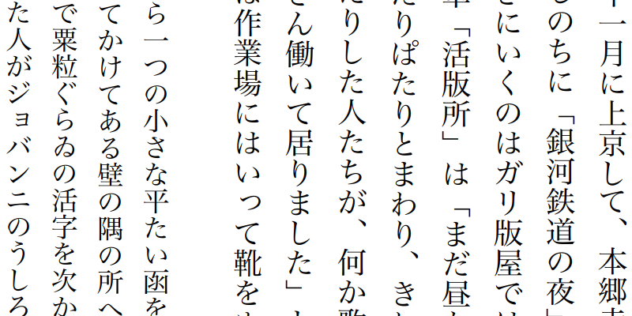

Read e-books in style. Open EPUB, Mobipocket, Kindle, FB2, CBZ, and PDF files. Read in paginated or scrolled mode. Adjust the font, spacing, margins, and color scheme. Window controls hide automatically to minimize distraction.
Navigate with ease. Turn the page with 1:1 touchpad and touchscreen gestures. View the table of contents, or use the find in book feature in the sidebar. Find your way through the book with the reading progress slider and navigation history.
 Screenshot of Foliate's main interface, showing the book Moby Dick from Standard Ebooks.
Screenshot of Foliate's main interface, showing the book Moby Dick from Standard Ebooks.

Add bookmarks and annotations. Reading progress, bookmarks, and annotations are stored in plain JSON files, so you can export or sync them easily with any tool or storage service. Learn More →
Nifty tools. Look up words in Wiktionary and Wikipedia. Translate passages with Google Translate. Read text aloud with with Speech Dispatcher.

Advanced rendering. Foliate supports right-to-left text, vertical writing, and fixed layout books. Enjoy features such as auto-hyphenation, popup footnotes, and media overlays.
Open source. Foliate is free software: you can redistribute it and/or modify it under the terms of the GNU General Public License.